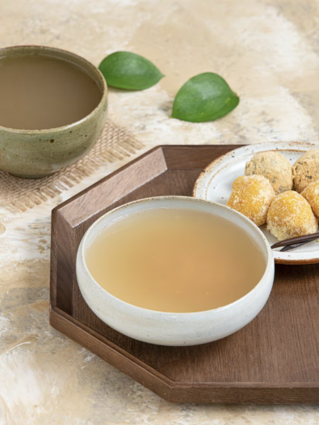

어릴 적 할머니께서
직접 만들어 주시던
바로 그 식혜의 맛!
직접 만들어 주시던
바로 그 식혜의 맛!
식혜 본연의 맛을 그대로 살린 비락식혜는
무색소, 무방부제로 만들어져서 안심하고
드실 수 있으며 흔들어 드시면 더욱 맛이 좋습니다.
무색소, 무방부제로 만들어져서 안심하고
드실 수 있으며 흔들어 드시면 더욱 맛이 좋습니다.

달콤하게 즐기는 팔도 비락식혜
달콤한 음료는 즐기고 싶지만, 자극적이지 않은 맛을 원할 땐 팔도 비락식혜를 만나보세요.
오랫동안 사랑받아온 식혜 특유의 달달하고 기분 좋은 맛을 그대로 담아내 어른이나 아이 할 것 없이 다 같이
즐길 수 있는 음료죠. 특히, 식사 후에 시원하게 한 잔씩 마시면 느끼했던 속이 개운하고 깔끔하게 정리된답니다.
넉넉한 양이라 더 좋은 팔도 비락식혜를 지금 바로 만나보세요.
오랫동안 사랑받아온 식혜 특유의 달달하고 기분 좋은 맛을 그대로 담아내 어른이나 아이 할 것 없이 다 같이
즐길 수 있는 음료죠. 특히, 식사 후에 시원하게 한 잔씩 마시면 느끼했던 속이 개운하고 깔끔하게 정리된답니다.
넉넉한 양이라 더 좋은 팔도 비락식혜를 지금 바로 만나보세요.
비락식혜는 건강해요!
국내산 쌀만을 사용해서 더욱 맛있습니다.
국내산 엿기름을 직접 추출하여 더욱 믿을 수 있습니다.
레토르트 공법을 사용하여 합성보존료를 쓰지 않습니다.
국내산 엿기름을 직접 추출하여 더욱 믿을 수 있습니다.
레토르트 공법을 사용하여 합성보존료를 쓰지 않습니다.